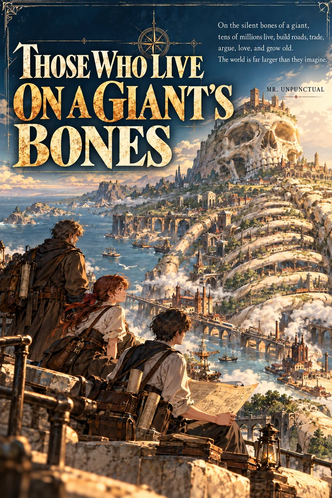

Those Who Live on a Giant’s Bones
Up one level
Worldbook
Novel
中文
/
English

A NOVEL · SERIAL PUBLICATION
Those Who Live on a Giant’s Bones
Start reading →
Volume I
Prologue · The Elena
Chapter One · Pending Enquiry
Chapter Two · Chickens and Soup